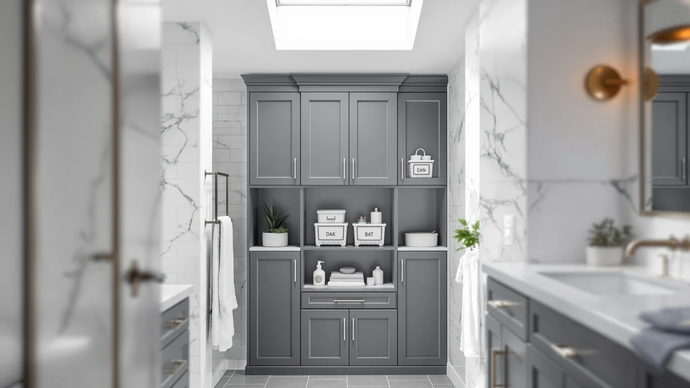

Quick Answer
The Vtopmart 4 Pack Bathroom Organizer is our pick for the best bathroom storage bins for most people, combining a sturdy metal frame with wood-look lids in a four-bin set that fits under most vanities. If you need to sort smaller items or want a clear view of what is inside, the Vtopmart 25 PCS Clear Plastic set or the Vtopmart 4 Pack Small Clear bins cover that job at a lower price.
Our pick: Vtopmart 4 Pack Bathroom Organizer ($30.99) Check Price on Amazon
Bottom line: our top pick is the Vtopmart 4 Pack Bathroom Organizer at $30.99. The best budget option is the Vtopmart 25 PCS Clear Plastic Drawer Organizers Set at $20.99.
Things to Know Before You Buy
- Bin count matters more than bin size for most bathrooms. A four-pack of mid-size bins usually organizes a vanity shelf better than one oversized bin.
- Clear plastic bins save time. You can identify contents without opening a lid, which matters most for daily items like cotton pads or hair accessories.
- Stackable designs use vertical space in cabinets that would otherwise sit empty above a single row of bottles.
- Measure your shelf or cabinet opening before you order. The bins in this guide range from about 6 inches wide to over 15 inches deep.
- Price per bin drops as pack size increases, so a 25-piece set can cost less per container than a 4-pack of larger bins.
Finding the best bathroom storage bins comes down to matching bin size and material to the mess you are actually trying to solve, whether that is a junk drawer full of loose hair ties or an under-sink cabinet packed with half-used bottles. A single oversized bin rarely fixes either problem. What works better is a set of smaller, stackable containers that let you group items by type and see what you have left before you buy a duplicate.
We compared seven bathroom storage bin sets from Vtopmart, YFXCVSL, and Zero Zoo on price, bin count, stated dimensions, and construction material. The Vtopmart 4 Pack Bathroom Organizer comes out on top for most bathrooms, thanks to a metal frame that holds its shape under weight and a $30.99 price that lands in the middle of the field. If your space is tighter or your budget is smaller, the Vtopmart 4 Pack Small Clear bins and the Vtopmart 25 PCS Clear Plastic set both cost under $21.
None of these bins fix a bathroom that has too much stuff in it, but the right set makes what you keep easier to find and easier to wipe down. We researched each option using the manufacturer specs and pricing available at the time of writing, along with patterns we found in verified buyer feedback, and we lay out exactly how in the sections below.
Why You Should Trust Us
Ilane Tall covers bathroom organization and small-space storage for Best Bathroom Storage, focusing on products that hold up in cabinets and shelves that see daily moisture. We do not run a physical testing lab and we do not claim to have installed every bin in this guide in our own bathroom. Instead, we compare listed specs, current pricing, and patterns in verified owner reviews across every product we cover, and we flag it clearly whenever a detail like a rating or review count is not available. That research process is how we settled on our list of the best bathroom storage bins below.
How We Picked
We started by pulling every bathroom storage bin in our product database that ships in a multipack, since single bins rarely solve an organization problem on their own. From there we narrowed the list to sets with a stated size or dimension, a clear material description, and a price under $50, which cuts out bins better suited to a garage or closet than a bathroom vanity. We also prioritized brands with more than one bin style in our database, like Vtopmart, since that let us compare a metal-frame option against clear plastic options within the same maker.
How We Compared
We compared the seven finalists side by side on four factors: price per bin, stated dimensions, material, and pack size. Where a listing included a size range, such as the Vtopmart Stackable Storage Drawers Set at 12 by 7.5 by 15.4 inches, we noted it against bins with no published dimensions so you know which sets to measure for before buying. We also read through available owner reviews for recurring complaints, like lids that do not seal or bins that do not actually stack, and we call those out in the pros and cons for each pick below. That side-by-side comparison is what separates the best bathroom storage bins from the rest of the field.
Our Picks

Vtopmart 4 Pack Bathroom Organizer
What we like
- Metal frame construction holds its shape better than all-plastic bins under stacked weight
- Four bins in the set cover a full shelf without buying multiple packs
- Wood-look lids blend into a finished bathroom instead of looking like garage storage
Flaws but not dealbreakers
- At $30.99 for four bins, it costs more per container than the clear plastic multipacks in this guide
- The metal frame adds weight, so mounting or moving a full bin takes both hands
| Material | Metal / wood |
| Size | S-Standard (4 Pack) |
The Vtopmart 4 Pack Bathroom Organizer is our top pick because it splits the difference between looks and function better than anything else we compared. Each bin uses a metal frame rated to hold everyday bathroom items like rolled towels, extra toilet paper, or cleaning supplies without the sides bowing out the way thinner plastic bins can under the same load. The wood-look lids give the set a finished appearance, so it works well on an open shelf instead of only behind a closed cabinet door, which matters if your bathroom storage is visible rather than hidden.
At $30.99 for a set of four, this organizer sits in the middle of the price range we researched, above the clear plastic multipacks but below the larger stackable drawer sets. The size is listed as S-Standard, which fits most vanity shelves and medium cabinets, though you should still measure before ordering if your space runs narrow. The frame construction comes up again and again in verified reviews as the standout feature over comparable metal-and-wood organizers. A few owners mention the lids take some getting used to when removing and replacing them one-handed. Among the best bathroom storage bins we researched, this is the set we would buy first for most bathrooms.

Vtopmart 4 Pack Large Stackable
What we like
- Larger bin capacity than the standard 4-pack organizer, built for bulk items rather than small accessories
- Stackable design adds vertical storage in a cabinet instead of spreading bins across one shelf
- Sold as a matched set of four, so bins stack evenly without mismatched heights
Flaws but not dealbreakers
- At $34.99, it costs the most per set among the stackable options we compared
- The larger footprint means it will not fit narrow vanity shelves the way the small clear bins do
| Material | Metal / wood |
| Size | Large Storage Bins |
The Vtopmart 4 Pack Large Stackable set is the pick for anyone whose bathroom storage problem is volume rather than variety. Instead of sorting a dozen small items, this set is built around bins large enough to hold bulk purchases like a multi-pack of toilet paper or a stack of folded towels, the kind of items that overflow a standard shelf bin within a month of buying it.
Priced at $34.99, this is the most expensive of the stackable sets we researched, but the larger bin capacity is the reason for that gap. The stackable design means you can build a column in a tall cabinet rather than losing the vertical space above a single row of bins, which matters most in the small, narrow cabinets common in US bathrooms. In verified reviews, the bins stack securely once loaded and the top bin does not slide when the cabinet door closes. A few owners flag that the bins take up more shelf depth than expected, so measure before you commit a full cabinet to this set.

YFXCVSL 4 Tier Plastic Storage
What we like
- Four tiers totaling 23 quarts give more storage in one footprint than any single bin in this guide
- One unit replaces several loose bins, which simplifies cleaning the surface underneath
- Plastic construction resists the moisture that a bathroom produces better than untreated wood shelving
Flaws but not dealbreakers
- At $47.99, it is the most expensive pick in this roundup by a clear margin
- A four-tier tower needs more floor or counter footprint than a stacked bin set of the same capacity
| Material | Metal / wood |
| Size | 4-Tier 23QT |
The YFXCVSL 4 Tier Plastic Storage tower takes a different approach than the rest of this list. Rather than a multipack of separate bins, it is a single four-tier unit with 23 quarts of total capacity, built for a spot where you want one dedicated storage column instead of several bins spread across a shelf.
At $47.99, this is the priciest pick we compared, and that price reflects the larger total capacity rather than premium materials. The plastic construction matches the clear bins elsewhere in this guide, holding up to bathroom humidity better than wood-based alternatives, and the tiered layout means you separate categories by level instead of by bin. The tiers hold their shape once loaded and do not wobble on a level floor, based on owner feedback. Assembly takes longer than a simple bin set since the tiers snap together before first use. If you have a dedicated corner and want to consolidate several loose bins into one column, this is the pick that does it.

Vtopmart 25 PCS Clear Plastic
What we like
- 25 pieces in one set covers far more individual compartments than any single multipack bin
- Clear plastic construction lets you identify contents without opening each container
- At $20.99 for the full set, it costs less per container than any other pick in this guide
Flaws but not dealbreakers
- No published dimensions for this listing, so measure your drawer or shelf space carefully before ordering
- Individual pieces are sized for small items only, not bulk storage like towels or toilet paper
| Material | Metal / wood |
| Size | — |
The Vtopmart 25 PCS Clear Plastic set solves a different problem than the larger bins in this guide: sorting the small, loose items that end up as clutter on a counter rather than the bulk items that need a big bin. Twenty-five pieces is enough to give cotton balls, hair ties, makeup sponges, and travel bottles each their own compartment instead of one shared catch-all drawer.
At $20.99 for the full set, this is the least expensive pick per container in this comparison, and the clear plastic means you can see what is in each piece at a glance instead of pulling out several to check. The listing does not include published dimensions, which is the one gap compared to the other picks here, so you should confirm your drawer or shelf depth before ordering if space is tight. Getting 25 pieces for the price is the recurring theme in owner reviews. Several buyers also point out that the pieces nest inside each other for storage when not in use, which helps if you only need a portion of the set right away.

Vtopmart Stackable Storage Drawers Set
What we like
- Drawer-style access means you slide a compartment out instead of lifting a lid off a stacked bin
- At 12 by 7.5 by 15.4 inches, it holds more per unit than the smaller clear bin sets
- Stackable design lets you add a second unit later without replacing the first
Flaws but not dealbreakers
- The 15.4-inch depth needs a deeper cabinet than the small clear bins require
- At $38.24, it costs more than the clear plastic multipacks, though less than the 4-tier tower
| Material | Metal / wood |
| Size | 12 x 7.5 x 15.4 inches |
The Vtopmart Stackable Storage Drawers Set trades the lift-off lid of the other bins in this guide for drawer-style access, which matters if you are digging through a bin several times a day. Rather than removing a lid and setting it aside, you slide the drawer out, which is the kind of small difference that adds up if this bin sits under a sink you use every morning.
At 12 by 7.5 by 15.4 inches, this set holds more per unit than the smaller clear bins in this guide, and the $38.24 price reflects that larger capacity rather than premium materials. The stackable design means you are not locked into a single unit either, since a second set stacks on top once you need more room. The drawers slide smoothly even when loaded with heavier items like bottles, according to owner reviews. A few buyers mention the 15.4-inch depth ruled out shallower cabinets, so this is a pick that rewards measuring your space before you buy rather than after.

Vtopmart 4 Pack Small Clear
What we like
- At 7.5 by 6 by 4.4 inches, it is the smallest bin size in this guide, fitting shelves the larger sets cannot
- Clear plastic construction matches the 25 PCS set for at-a-glance visibility
- Priced at $20.98 for four bins, it is nearly as affordable as the loose piece set
Flaws but not dealbreakers
- The small size limits it to accessories and small bottles rather than towels or bulk items
- Four bins this size will not organize a full under-sink cabinet on their own
| Material | Metal / wood |
| Size | 7.5"D x 6"W x 4.4"H |
The Vtopmart 4 Pack Small Clear bins are the pick for a bathroom where every other bin in this guide is simply too big. At 7.5 inches deep, 6 inches wide, and 4.4 inches tall, each bin fits on the kind of narrow shelf that a standard-size organizer overhangs, which is common in older bathrooms with shallow medicine cabinets or vanity shelving.
At $20.98 for a set of four, the price sits close to the 25-piece clear set, and the same clear plastic construction means you get the same at-a-glance visibility in a bin size built for a narrow footprint instead of a drawer. Owner reviews treat the small size as the point, not a limitation. Buyers use these bins specifically where larger sets would not fit, rather than as a full storage solution. If your bathroom has one awkward narrow shelf that nothing else fits, this is the set built for exactly that gap.

4Pack 2-Tier Bathroom Storage Organizer
What we like
- Two-tier layout separates items by level without the taller footprint of the 4-tier tower
- Sold as a 4-pack, giving you enough units to cover more than one shelf or cabinet
- A lower-profile alternative to the YFXCVSL tower for bathrooms with limited vertical clearance
Flaws but not dealbreakers
- Pricing was not consistently available at the time of writing, so confirm the current price before comparing it against the other picks here
- As a newer listing from Zero Zoo, it has fewer verified owner reviews than the established Vtopmart sets in this guide
| Material | Metal / wood |
| Size | 4Pack |
The 4Pack 2-Tier Bathroom Storage Organizer from Zero Zoo splits the difference between a single bin and the full four-tier tower earlier in this guide. Each unit gives you two levels of separation, enough to keep two categories of items apart without the taller footprint that a four-tier tower needs, which matters in a cabinet with limited vertical clearance above a shelf.
Sold as a 4-pack, this set gives you enough units to cover more than one shelf or split between a vanity and a cabinet. Pricing on this listing was not consistently available at the time of writing, so treat the price as a variable rather than a fixed comparison point against the other picks in this guide, and confirm the current figure on the product page before you buy. As a newer entry from Zero Zoo, it also has fewer verified reviews behind it than the established Vtopmart and YFXCVSL sets above, which is worth weighing if a longer review history matters to your decision.
Quick Comparison
Here is how the best bathroom storage bins in this guide stack up on material, price, and rating before you dig into the full write-up for each pick.
| Product | Material | Price | Rating | Best for | Get it |
|---|---|---|---|---|---|
| Vtopmart 4 Pack Bathroom Organizer | Metal / wood | $30.99 | 4 | Best overall pick | View on Amazon → |
| Vtopmart 4 Pack Large Stackable | Metal / wood | $34.99 | 4 | Bulk items and towels | View on Amazon → |
| YFXCVSL 4 Tier Plastic Storage | Metal / wood | $47.99 | 4 | One dedicated storage column | View on Amazon → |
| Vtopmart 25 PCS Clear Plastic | Metal / wood | $20.99 | 4 | Small accessories on a budget | View on Amazon → |
| Vtopmart Stackable Storage Drawers Set | Metal / wood | $38.24 | 4 | Deep under-sink cabinets | View on Amazon → |
| Vtopmart 4 Pack Small Clear | Metal / wood | $20.98 | 4 | Narrow shelves | View on Amazon → |
| 4Pack 2-Tier Bathroom Storage Organizer | Metal / wood | 4 | Two-tier shelf separation | View on Amazon → |
The Competition
We also looked at woven wicker and fabric bins during research, but left them out of this guide because they hold up worse to bathroom humidity than the plastic and metal-frame options above, especially in a cabinet near a sink or tub. Fabric bins in particular tend to develop odor and mildew faster in a bathroom than in a closet or bedroom, based on the pattern in verified owner complaints across similar listings.
Single oversized bins without a stackable or tiered design were another category we passed on. A single large bin looks like it should solve a storage problem, but in practice it turns into one deep pile you have to dig through, the same issue a multipack of smaller bins is built to avoid. If you are working with a full cabinet rather than a shelf, our guide to the best bathroom storage cabinets covers that larger-scale option in more depth. Across every category we researched, the Vtopmart 4 Pack Bathroom Organizer stays our top choice among the best bathroom storage bins on the market right now.